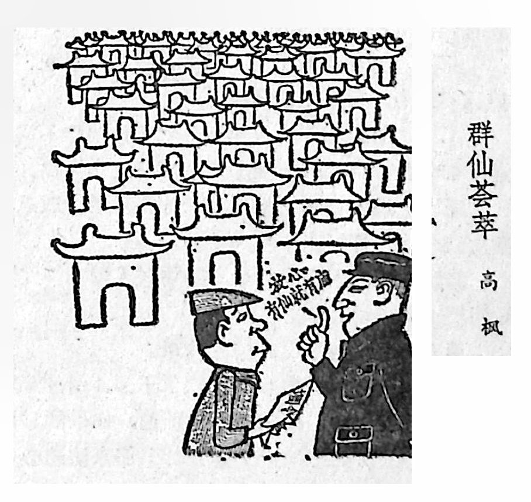

高枫 《人事》1987年第2期（总第17期），第11页
群仙荟萃
A Gathering of Immortals
- Text in the drawing
- 放心，有仙就有庙
Don't worry — wherever there's an immortal, there'll be a temple - Description
- Above a stout cadre and a man clutching a paper rises a heap of little temples. The cadre raises a finger: don't worry — wherever there's an immortal, there'll be a temple.
- Note
- The common jibe was that every temple gets its immortal (有庙就有仙): create a post and someone will fill it. Here the logic runs the other way — every official gets an office built for him.
- Artist
- Gao Feng 高枫
- Published in
- 《人事》1987年第2期（总第17期）, p. 11
- Themes
- Overstaffing and overlapping agencies · Bureaucratism

Cite
Gao Feng, “群仙荟萃” [A Gathering of Immortals], Renshi (Personnel) 《人事》, 1987, no. 2, p. 11.